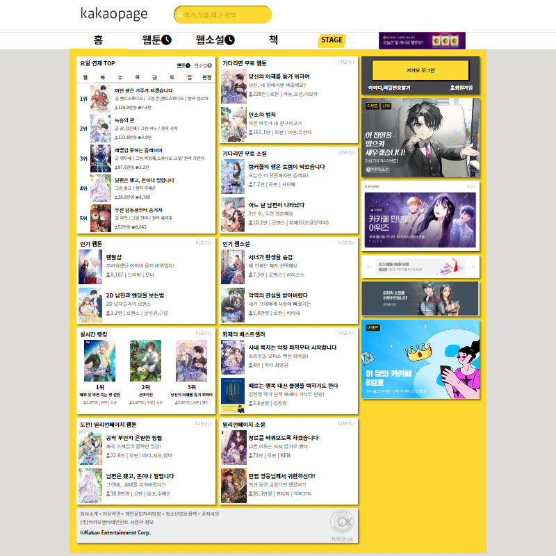

-
Kakaopage의 메인페이지 리뉴얼
SBS아카데미 컴퓨터아트학원 프론트엔드 개발자 양성과정에서 작업한 과제로,
특정 사이트의 메인페이지를 선정하고,
해당 메인페이지를 분석한 후에 개선점을 찾아서 직접 개선한 메인 페이지를 만들어 보는 과제였습니다.
https://webcodingtest-jangtaehun.netlify.app/
 -
Mytour- 여행사 사이트의 메인페이지 벤치마킹
SBS아카데미 컴퓨터아트학원 프론트엔드 개발자 양성과정에서 진행한 팀 프로젝트 과제로,
여행사 사이트인 하나투어와 모두투어를 비교 분석하여 각각의 장단점을 찾아낸 후에
벤치마킹하여서 새로운 여행사 사이트의 메인페이지를 만들어보는 팀 프로젝트였습니다.
https://sbswebcoding-mytour.netlify.app/
-
WebGame
-
Tetris
개인적인 시간에 좀 더 알고리즘 공부와 프론트엔드 공부를 하기 위해 만들어본 테트리스입니다.
인터넷에 테트리스의 알고리즘을 검색하여서 나온 사이트의 코드를 직접 분석해보고 따라 만들어보았습니다.
조작법
q : 왼쪽으로 회전
w : 오른쪽으로 회전
← : 왼쪽으로 이동
→ : 오른쪽으로 이동
↓ : 아래쪽으로 이동
space : 아래로 빠른 이동